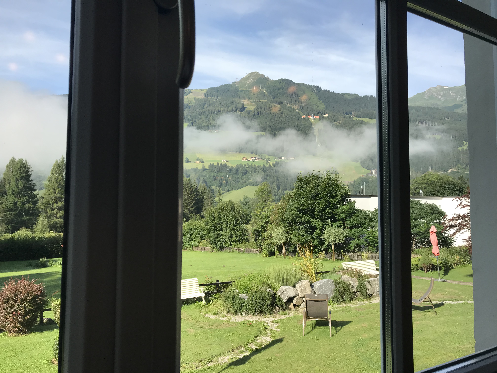

My photos
Here are some photos of our last family trip to Austria and Switzerland


| Type | Main Goal | Search Results | Appearance and Page Structure |
|---|---|---|---|
| web1 | Focused on consuming data content. The only way to interact was through Emails | Results in search engines contain personal websites, encyclopedia websites, MP3 websites, etc. Search is pretty fast, but the results are not that much accurate | Web pages were static, i.e. they were delivered to the user's web browser exactly as were stored |
| web2 | Focused on participation, collaboration, and information sharing, like comments in the end of an article. Main usage was not only reading data but also the new "writing ability" which helped users interact with each other more freely | Results in search engines contain not only personal websites and encyclopedia websites, but blogs, wikis, social network websites, etc. Search engines in web 2.0 uses tags also, which improve the given results | Web pages became more dynamic (using AJAX and Javascript), as users could add their own data to websites (like comments) |
| web3 | Focused on semantic. Web3 is more likely to refine our needs and searches to us. Everyone will recieve exactly (as much as possible) the data it needs. Main usage referes to "machine-to-machine" interaction: the ability of computers to read and understand files by their own | Results in search engines contain much more personal-adapted websites of all kinds: from blogs and articles to social network websites | Web3 uses much reacher graphics and even 3D technology in the future |